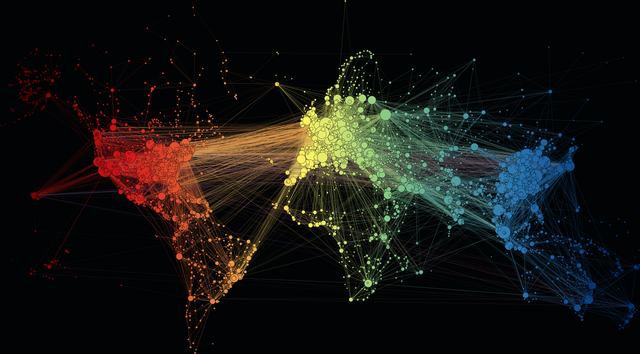

Machine Learning for Networking
Version 0.1
Table of Contents
Chapter 1: Introduction
Chapter 2: Motivating Problems
Chapter 3: Data Acquisition
Chapter 4: Machine Learning Pipeline
Chapter 5: Supervised Learning
Chapter 6: Unsupervised Learning
Chapter 7: Deployment Considarations
Chapter 8: Looking Ahead
Appendix: Activities
About The Book
About The Authors
Machine Learning for Networking
Machine Learning for Networking
View page source
Next

Machine Learning for Networking
¶
Nick Feamster and Noah Apthorpe
¶
Table of Contents
Chapter 1: Introduction
How Networks Run
The Role of Machine Learning
Why Now?
What You Will Learn in This Book
Chapter 2: Motivating Problems
Security
Performance
Resource Allocation
Chapter 3: Data Acquisition
What to Measure
How to Measure
From Acquisition to Model Input
Chapter 4: Machine Learning Pipeline
Data Engineering
Model Training
Model Evaluation
Chapter 5: Supervised Learning
Non-Parametric Models
Probabilistic Models
Linear Models
Support Vector Machines
Decision Trees
Ensemble Methods
Deep Learning
Chapter 6: Unsupervised Learning
Dimensionality Reduction
Clustering
Semi-Supervised Learning
Chapter 7: Deployment Considarations
Automation
Model Drift
Explainability
Chapter 8: Looking Ahead
Appendix: Activities
Packet Capture
Security
Network Performance
Data Acquisition
Feature Extraction
Training a Model
Machine Learning Pipeline
Naive Bayes
Linear Regression
Logistic Regression
Trees and Ensembles
Deep Learning
Dimensionality Reduction
Clustering
Automation
About The Book
About The Authors